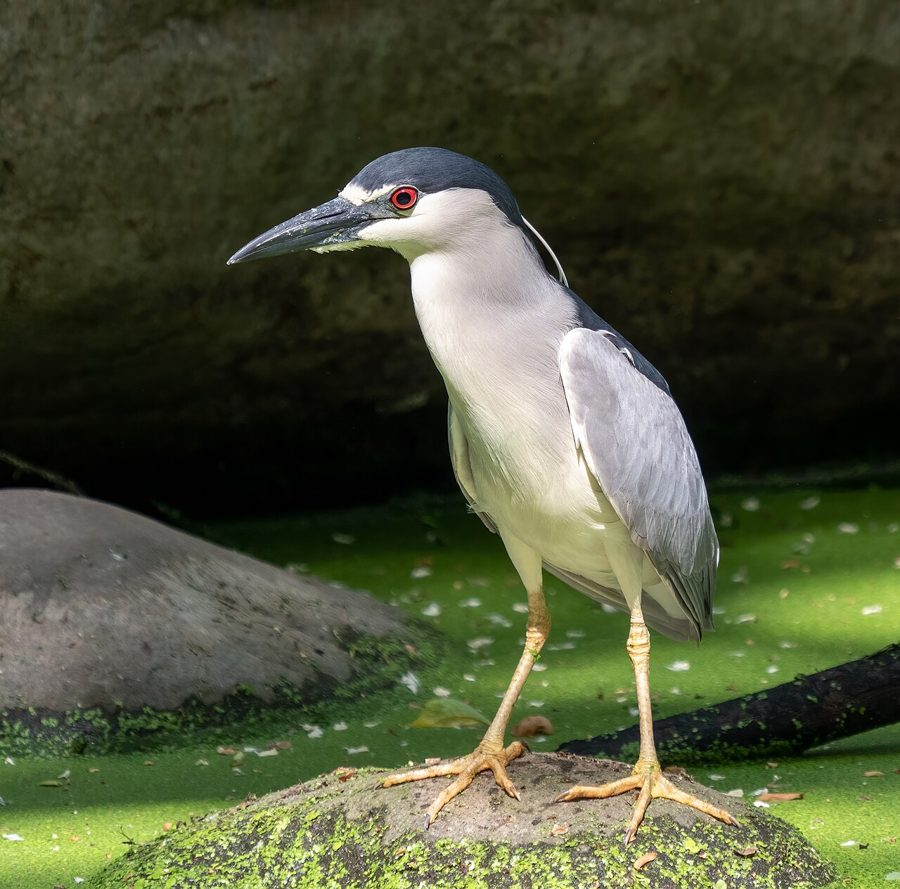

रातबगुलाBlack-crowned Night Heron
Nycticorax nycticorax · Ardeidae · BRD-0056

- Scientific name
- Nycticorax nycticorax (Linnaeus, 1758)
- Family
- Ardeidae
- Hindi
- रातबगुला
- Status here
- native
- IUCN
- LC
When to look कब देखें
Present all year.
रातबगुला / Black-crowned Night Heron
Nycticorax nycticorax (Linnaeus, 1758) — Ardeidae
रातबगुला (ब्लैक-क्राउंड नाइट हेरॉन) — पूर्वी उत्तर प्रदेश के ग्रामीण तालाबों, नहरों और नदियों के किनारे पाया जाने वाला एक मध्यम आकार का, मजबूत कद-काठी और छोटी गर्दन वाला बगुला (heron) है। यह मुख्य रूप से निशाचर (nocturnal) है, जो दिन के समय जलाशयों के किनारे लगे घने पेड़ों (जैसे बबूल, पीपल या बांस की झाड़ियों) में झुंड बनाकर छिपा रहता है और शाम होते ही भोजन की तलाश में सक्रिय हो जाता है। वयस्क पक्षी का सिर और पीठ चमकदार काली (glossy black crown and back), पंख धूसर-ग्रे, और पेट सफ़ेद होता है, तथा इसकी आँखें गहरे लाल रंग (striking red eyes) की होती हैं। इसके विपरीत, कम उम्र (immature) के पक्षी मटमैले भूरे रंग के होते हैं जिन पर सफ़ेद धब्बे बने होते हैं, जो वयस्कों से पूरी तरह भिन्न दिखते हैं। यह छोटी मछलियों, मेंढकों और जलीय कीड़ों का शिकार करता है।
Quick Identification त्वरित पहचान
| Feature | Description |
|---|---|
| Size | Medium-sized, stocky heron (58–65 cm total length); relatively short neck and legs |
| Colouration | Adult has a glossy black crown and back; pale grey wings and tail; pure white underparts |
| Eyes | Bright, glowing ruby-red eyes in adults; orange-brown in immature birds |
| Plumes | Adults have 2–3 long, thin, white ribbon-like plumes extending from the nape |
| Immature | Completely brown body heavily streaked and spotted with white and buff (looks like a bittern) |
| Bare Parts | Bill is thick, black, and pointed; legs are pale yellow, turning pinkish-red when breeding |
Field tip: Look in leafy trees (like Babool or Jamun) bordering village ponds during the day. Look for hunched, stocky silhouettes sitting quietly in the shade. At dusk, listen for their loud, barking "quok" call as they fly out to hunt. The female resembles the male and is shown in the field tip.
Morphology आकारिकी
Biometrics (typical measurements in the northern Indian plains):
| Measurement | Range |
|---|---|
| Total length | 580–650 mm |
| Wing (flattened chord) | 270–305 mm |
| Tail | 100–115 mm |
| Tarsus | 70–82 mm |
| Bill (culmen from base) | 65–75 mm |
| Weight | 500–800 g |
Plumage: Adults display a distinct glossy greenish-black crown, nape, back, and scapulars. The forehead and a thin line over the eye are white. The cheeks, throat, and underparts are pure white or pale cream. The wings, rump, and tail are uniform ash-grey. During the breeding season, 2 or 3 long, narrow, white plumes hang down from the back of the head. Immatures are grey-brown above with white teardrop spots, and white below with heavy brown streaks.
Bare parts: The stout bill is black, with a greenish base on the lower mandible. The irises are bright ruby-red. The legs and feet are pale yellow or yellow-green, turning pinkish-red during the peak breeding phase.
Vocalisations
Highly vocal at dusk and night, particularly during flight.
- Flight call: A sudden, loud, harsh, barking croak, quok or wock, repeated at intervals.
- Alarm call: A choking, rapid gack-gack-gack, produced when flushed from its daytime roosting trees.
Behaviour & Ecology व्यवहार और पारिस्थितिकी
- Nocturnal hunting: Highly active at dusk and during the night. It wades slowly in shallow water or stands motionless on logs and banks, striking at aquatic prey. It shares this night-hunting niche with few other herons, reducing competition.
- Daytime roosting: Spends the day in colonial roosts (roosting colonies). Dozens of individuals gather in the shade of dense trees bordering ponds, hunched up with their heads pulled into their shoulders.
- Age difference: The brown, spotted plumage of the immature bird provides camouflage in dry branches, protecting it from predators while it learns to hunt.
Life Cycle / Phenology जीवन चक्र
- Breeding season: June to September in northern India, matching the monsoon season when aquatic food is abundant.
- Nesting: Builds a platform nest of sticks, which is often flimsy and shallow.
- Nest site: Built colonially (heronries) in Babool (Acacia nilotica), Peepal (Ficus religiosa), or Bamboo groves overhanging village ponds.
- Clutch size: 3 to 4 pale greenish-blue eggs.
- Incubation: 21–22 days, shared by both parents.
- Fledging: Young chicks leave the nest and climb onto nearby branches at about 20–25 days, and fledge fully in 35–40 days.
Host Plants or Prey आहार
Primary food items:
- Fish: Small carps, barbs, climbing perch, and snakehead juveniles.
- Amphibians: Grass frogs (Fejervarya limnocharis), skipper frogs, and their tadpoles.
- Insects: Aquatic beetles, water bugs, dragonfly nymphs, and grasshoppers.
- Other invertebrates: freshwater crabs (Paratelphusa), snails, and earthworms.
Predators / Natural Enemies शत्रु
- Raptors: Bonelli's Eagles and larger owls prey on roosting night herons.
- Corvids: House Crows (Corvus splendens) and Jungle Crows frequently raid nests in search of eggs.
- Reptiles: Bengal Monitors climb trees to consume eggs and small nestlings.
Agricultural / Human Relevance कृषि प्रासंगिकता
Wetland scavenger. Night herons play a key role in controlling insect populations near village irrigation canals and consuming dead organic matter.
Conservation and legal status: Protected under Schedule IV of the Wildlife Protection Act, 1972. They are threatened by the felling of mature roosting trees near village ponds and the drainage of local wetlands for housing. Water pollution in village ponds also affects their food supply.
Expected Locally स्थानीय रूप से अपेक्षित
Not a field record. Written from published accounts for eastern Uttar Pradesh. No confirmed local sighting yet — if you have seen it, that is what the atlas needs.
अभी तक स्थानीय पुष्टि नहीं। यह विवरण प्रकाशित स्रोतों से है, किसी अवलोकन से नहीं।
A common resident throughout the Basti district, regularly recorded in village ponds (talab) in the Harraiya, Vikramjot, and Basti blocks. During the day, they can be observed roosting in large numbers in mature Peepal or Mango trees bordering local water bodies. Their characteristic barking quok calls are a regular sound at dusk.
Distribution वितरण
Global range: A cosmopolitan species found throughout North America, Europe, Africa, Asia, and South America.
In India: A widespread resident throughout the plains and low hills.
In Uttar Pradesh: Common state-wide near all village ponds, canals, and river channels.
In Basti district / eastern UP: Regularly recorded in rural wetlands and village groves across all blocks.
Research Questions शोध प्रश्न
Anyone can investigate these | कोई भी इन प्रश्नों की जाँच कर सकता है
- How many minutes after sunset does the first Black-crowned Night Heron fly out from its daytime roost? — Record departure times in relation to light levels.
- What is the ratio of adult to brown-spotted immature night herons in a local Basti pond roost? / बस्ती के एक तालाब में वयस्कों और भूरे-चित्तीदार किशोर रातबगुलों का अनुपात क्या है? — Conduct daytime counts in roosting trees.
- Do Night Herons prefer nesting in thorny Babool trees over Mango trees in Basti? — Survey nest distributions in colonial heronries.
- How do Night Herons and Cattle Egrets share the same nesting tree during the breeding season? — Document nesting heights and interactions.
- Does the hooting or barking frequency of Night Herons change during moonlit nights? / क्या चांदनी रातों में रातबगुले के बोलने या उड़ने की आवृत्ति में बदलाव आता है? — Monitor calls across different phases of the moon.
Similar Species मिलती-जुलती प्रजातियाँ
| Species | Key Difference | हिंदी |
|---|---|---|
| Indian Pond Heron (Ardeola grayii) | Much smaller; brown back (white wings in flight); hunts during the day | अंधा बगुला — छोटा आकार, दिन में सक्रिय, सफ़ेद पंख |
| Grey Heron (Ardea cinerea) | Much larger; very long neck and legs; grey plumage; active primarily during the day | ग्रे बगुला — बहुत बड़ा, लंबा कद, दिन में शिकारी |
| Cinnamon Bittern (Ixobrychus cinnamomeus) | Much smaller; uniform cinnamon-chestnut plumage; lacks black crown; highly secretive | दालचीनी बगुला — छोटा आकार, लाल-भूरा रंग |
Field rule: Stocky, short-necked heron with a glossy black crown and back, grey wings, white belly, and large red eyes, roosting in groups during the day, is a Black-crowned Night Heron.
Taxonomy & Classification वर्गीकरण
Original description. Carl Linnaeus described the Black-crowned Night Heron as Ardea nycticorax in 1758 in his Systema Naturae (ed. 10, vol. 1, p. 96). The type locality was southern Europe. Thomas Ignatius Maria Forster placed it in the genus Nycticorax in 1817. The genus and specific names are derived from the Ancient Greek nukt-(night) and korax(raven), meaning night-raven, referencing its nocturnal habits and croaking call.
Subspecies. Four subspecies are recognized globally. The nominate subspecies resident in UP is:
| Subspecies | Authority | Range | Notes |
|---|---|---|---|
| N. n. nycticorax | (Linnaeus, 1758) | Europe, Africa, and Asia to South/East Asia | UP subspecies; nominate form; displays wide global distribution |
Family and order placement. Placed in the order Pelecaniformes, family Ardeidae, subfamily Nycticoracinae (night herons).
Phylogenetic notes. Genetic data shows that Nycticorax nycticorax is closely related to the Rufous Night Heron (Nycticorax caledonicus), with which it can occasionally hybridize.
IUCN status rationale. Listed as Least Concern (LC). The species has an extremely large range and stable population, although local populations are sensitive to the removal of mature trees near water bodies.
Photo Gallery फोटो गैलरी
References संदर्भ
- Linnaeus, C. (1758). Systema Naturae. Tenth Edition. Holmiae, p. 96. [original description]
- Ali, S. & Ripley, S. D. (1999). Handbook of the Birds of India and Pakistan. Vol. 1. Oxford University Press, New Delhi.
- Grimmett, R., Inskipp, C. & Inskipp, T. (2011). Birds of the Indian Subcontinent. 2nd ed. Christopher Helm, London.
- Kushlan, J. A. & Hancock, J. A. (2005). The Herons. Oxford University Press, Oxford.
- BirdLife International (2024). Nycticorax nycticorax. IUCN Red List of Threatened Species. Ver. 2024.
- GBIF Occurrence Data — Nycticorax nycticorax, Uttar Pradesh (2010–2025).
Source file: species/fauna/birds/black_crowned_night_heron.md